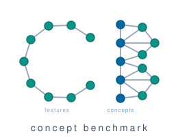
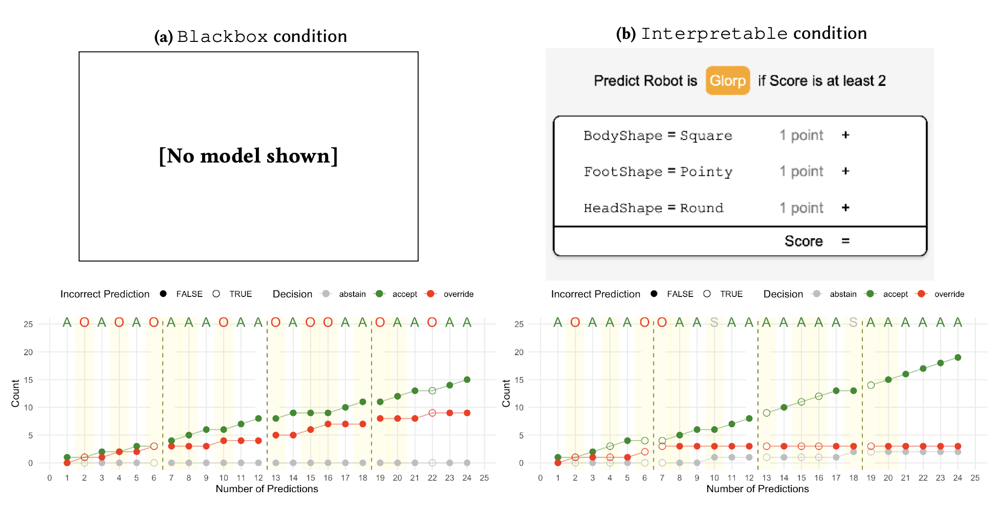
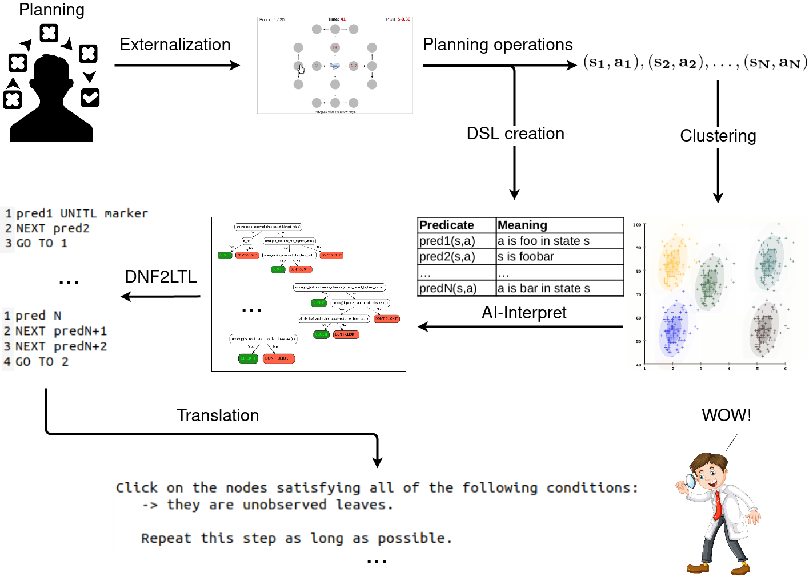
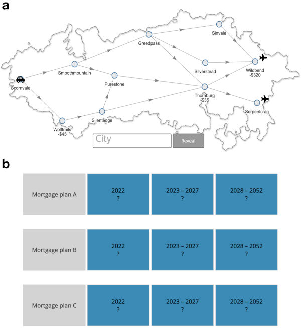
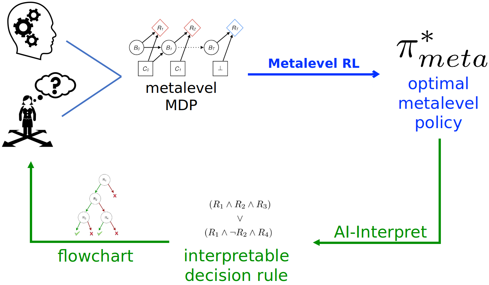

PhD Candidate
Computer Science & Engineering
University of California, San Diego
Email: jskirzynski [at] ucsd [dot] edu
I am a Ph.D. candidate in Computer Science at UC San Diego, advised by Berk Ustun, and a member of ARIA, the NSF AI Research Institute on Interaction for AI Assistants. My research sits at the intersection of machine learning, human-computer interaction, and cognitive science. The main problem I study is the ineffectiveness of human-AI collaboration. To solve it, I work towards a science of human-AI collaboration: I measure how people work with AI, learn from those measurements what people actually need, and engineer systems that meet those needs. For instance, I found that interpretability helps or harms depending on the task. People overrely on interpretable models when they are asked to supervise them, yet an interpretable system we built to teach decision strategies measurably improved people's performance. I pursue this science wherever people cannot or should not fully defer to AI outputs, e.g., in policy, health, finance, and beyond.
Before my Ph.D., I was a research scientist at the Max Planck Institute for Intelligent Systems, where I worked with Falk Lieder on interpretable reinforcement learning and interventions to improve human planning. I hold an M.S. in Computer Science from McGill University, and an M.S. in Cognitive Science and a B.S. in Mathematics and Cognitive Science from the University of Warsaw. You can access my full CV here and read my research statement here.




